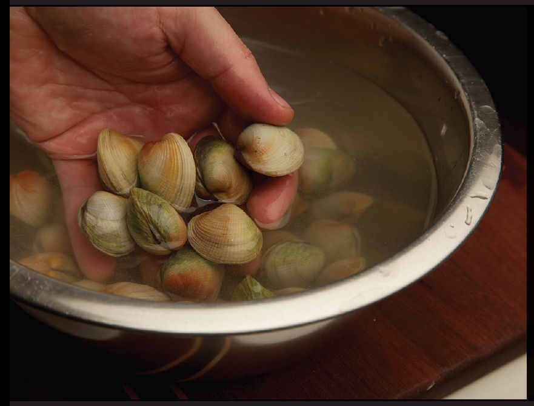

CLAMS WITH GARLIC, SAKE, AND BUTTER
|
Yield Serves 4 |
Active Time 10 minutes Total Time 15 minutes, plus 30 to 60 minutes for purging the clams |
To purge clams, submerge them in a bowl of cold salty water (about 3 tablespoons of Diamond Crystal kosher salt or 2 tablespoons of Morton’s kosher salt per liter of water; a 2½ % brine solution) for half an hour, then drain. Repeat until there is no grit left in the water.

This recipe combines classic Western flavors—garlic, butter, and clams—with a dash of sake and soy sauce. It’s equally at home with noodles, rice, or a good loaf of crusty bread to sop up the juices.
INGREDIENTS
1 tablespoon (15 g) unsalted butter
3 medium garlic cloves (8 g), thinly sliced
1 medium shallot (1½ ounces/45 g), thinly sliced
Pinch of hot red pepper flakes or Thai chile flakes
½ cup (120 ml) dry sake
1 teaspoon (5 ml) light soy sauce or shoyu
1½ pounds (675 g) live Littleneck clams, Manila clams, or cockles, purged (see Note)
Handful of roughly chopped fresh cilantro leaves
1 scallion, thinly sliced
1 teaspoon (3 g) cornstarch mixed with 1 tablespoon (15 ml) cold water
DIRECTIONS
1Heat the butter in a wok over medium heat until melted. Add the garlic, shallot, and chile flakes and cook until the garlic is softened but not browned, about 30 seconds. Add the sake and soy sauce. Increase the heat to high and bring to a boil. Add the clams and stir. Cover and cook, shaking the wok occasionally and adjusting the heat to maintain a steady simmer, until all the clams or mussels are open, about 6 minutes.
2Stir in the cilantro and scallions. Stir the cornstarch slurry and add half. Cook, tossing, until the sauce thickens very lightly and emulsifies. Adjust the sauce consistency with more cornstarch slurry if it is too thin or more water if it is too thick. Transfer to a serving platter and serve immediately.